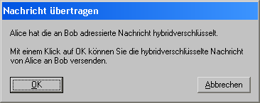

Dieser Dialog wird angezeigt, wenn Sie im Dialog für den Seitenkanalangriff auf das Hybridverschlüsselungsprotokoll die Schaltfläche Nachricht übertragen klicken.

Durch Klicken der Schaltfläche OK beginnen Sie die Übertragung der hybridverschlüsselten Nachricht von Alice an Bob.
Bemerkung:
Der Kommunikationskanal ist öffentlich und ungeschützt. Um die zu übertragende Nachricht vor Mitlesern zu schützen, wird sie hybridverschlüsselt.